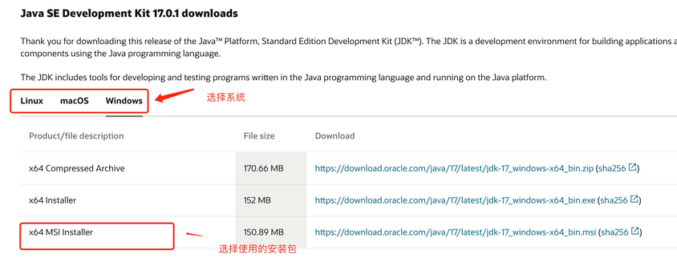
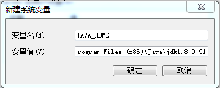
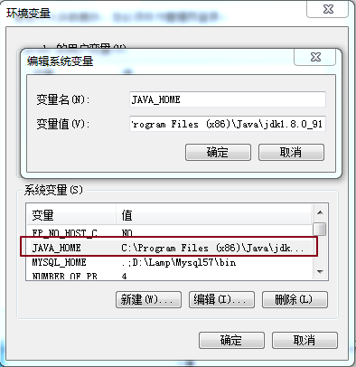
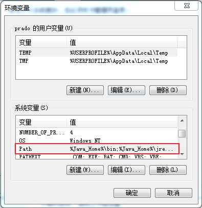
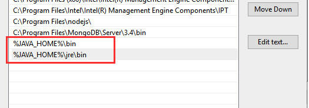
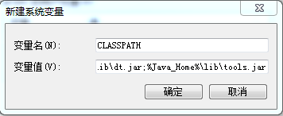
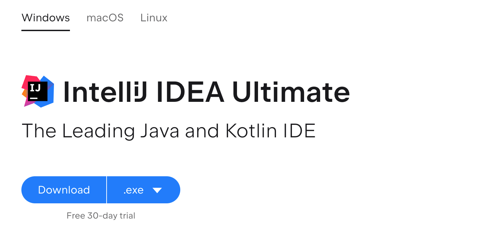
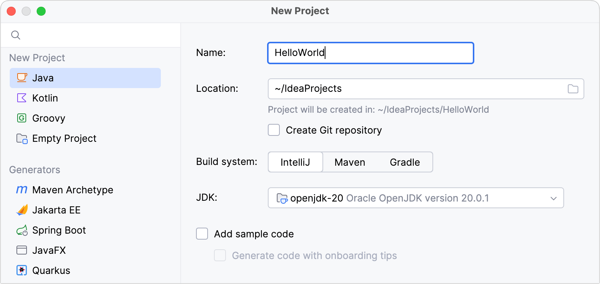

Java 開発環境設定
この章では、Java 開発環境の構築方法を紹介します。
Windows システムへの Java のインストール
JDK のダウンロード
まず、Java 開発キット JDK をダウンロードする必要があります。ダウンロード先:https://www.oracle.com/java/technologies/downloads/ダウンロードページで、ご自身のシステムに合ったバージョンを選択してください。この記事では Windows 64ビットシステムを例に説明します:

ダウンロード後、JDK のインストールは指示に従って進めてください。また、JDK のインストール時に JRE もインストールされるので、そのまま一緒にインストールしてください。
JDK をインストールする際、インストール中にインストールディレクトリなどをカスタマイズできます。例えば、インストールディレクトリを次のように選択します:C:\Program Files (x86)\Java\jdk1.8.0_91。
環境変数の設定
1. インストールが完了したら、「PC」を右クリックし、「プロパティ」をクリックして、「システムの詳細設定」を選択します。

2. 「詳細設定」タブを選択し、「環境変数」をクリックします。

すると、下図のような画面が表示されます:

「システム環境変数」で 3 つのプロパティ、JAVA_HOME、PATH、CLASSPATH を設定します(大文字小文字は問いません)。すでに存在する場合は「編集」をクリックし、存在しない場合は「新規」をクリックします。
注意:1.5 以降のバージョンの JDK を使用する場合、CLASSPATH 環境変数を設定しなくても、Java プログラムを正常にコンパイルおよび実行できます。
変数設定パラメータは次のとおりです:
- 変数名:JAVA_HOME
- 変数値:C:\Program Files (x86)\Java\jdk1.8.0_91// 自分の実際のパスに合わせて設定してください
- 変数名:CLASSPATH
- 変数値:.;%JAVA_HOME%\lib\dt.jar;%JAVA_HOME%\lib\tools.jar;// 先頭に「.」があることに注意
- 変数名:Path
- 変数値:%JAVA_HOME%\bin;%JAVA_HOME%\jre\bin;
JAVA_HOME の設定


PATH の設定


注意:Windows 10 では、Path 変数は複数の行に分かれて表示されます。そのため、次を%JAVA_HOME%\bin;%JAVA_HOME%\jre\bin;分けて追加する必要があります。そうしないと認識されません:
%JAVA_HOME%\bin; %JAVA_HOME%\jre\bin;
詳細は次を参照してください:Windows 10 での Java 環境変数の設定
CLASSPATH の設定

これは Java の環境設定です。設定が完了したら、Eclipse を起動してコードを書くことができます。Eclipse が自動的に Java 環境の設定を完了します。
JDK が正常にインストールされたかテストする
1. 「スタート」→「ファイル名を指定して実行」で「cmd」と入力します。
2. 次のコマンドを入力します:java -version、java、javacいくつかのコマンド（を実行し）、以下の情報が表示されれば、環境変数の設定が成功したことになります。
Linux、UNIX、Solaris、FreeBSD の環境変数設定
環境変数 PATH は、Java バイナリファイルがインストールされている場所を指すように設定する必要があります。設定で問題が発生した場合は、シェルのドキュメントを参照してください。
例えば、bash をシェルとして使用している場合、.bashrc ファイルの末尾に次の内容を追加できます: export PATH=/path/to/java:$PATH
人気の Java 開発ツール
「仕事をうまくやるには、まず道具を研ぐ必要がある」と言われるように、Java 言語の開発でも優れた開発ツールが必要です。現在市場には多くの IDE がありますが、この記事では以下の Java 開発ツールを紹介します:
JetBrainsの IDEA は、現在多くの人が使い始めており、機能が非常に強力です。ダウンロード先:https://www.jetbrains.com/idea/download/

VSCode : VSCode (正式名称: Visual Studio Code) は、マイクロソフトが開発したクロスプラットフォームの無料ソースコードエディタです。
ダウンロード先:https://code.visualstudio.com/
インストールチュートリアル: https://www.runoob.com/w3cnote/vscode-tutorial.html

Netbeans:オープンソースで無料の Java IDE。ダウンロード先:https://www.netbeans.org/index.html

Eclipse:もう 1 つの無料でオープンソースの Java IDE。ダウンロード先:https://www.eclipse.org/downloads/packages/
選択Eclipse IDE for Java Developers：

IntelliJ IDEA を使って最初の Java アプリケーションを作成する
- 1. IntelliJ IDEA を起動します。
- 2. ようこそ画面で「新規プロジェクト」をクリックします。
- 3. 「新規プロジェクト」ウィザードで、左側のリストから「Java」を選択します。
- 4. プロジェクトに名前を付け (例: HelloWorld)、必要に応じてデフォルトの場所を変更します。
- 5. このチュートリアルではバージョン管理システムを使用しないため、「Git リポジトリを作成」オプションを無効にします。
- 6. ビルドシステムで IntelliJ が選択されていることを確認します。

IntelliJ IDEA で Java アプリケーションを開発するには、Java SDK (JDK) が必要です。
IntelliJ IDEA に必要な JDK がすでに定義されている場合は、JDK リストからそれを選択します。
お使いのコンピューターに JDK がインストールされているが、IDE で定義されていない場合は、「JDK を追加」を選択し、JDK ホームディレクトリのパスを指定します (例: /Library/Java/JavaVirtualMachines/jdk-20.0.1.jdk)。

パッケージとクラスを作成するには、プロジェクトツールウィンドウで src フォルダーを右クリックし、「新規」を選択して、「Java クラス」を選択します。
名前フィールドに com.example.helloworld.HelloWorld と入力して OK をクリックすると、IntelliJ IDEA が com.example.helloworld パッケージと HelloWorld クラスを作成します。
コードの記述を開始します:
Hello World を出力するコードを書きます
コードを実行し、結果を出力します:
Eclipse を使って最初の Java プログラムを実行する
ビデオデモは次のとおりです:
HelloWorld.java ファイルのコード:
Vocsal
105***3520@qq.com
参考リンク
環境変数の設定において:
JAVA_HOME の設定:
1つ目は、参照を容易にするためです。例えば、JDK が C:\jdk1.6.0 ディレクトリにインストールされている場合、JAVA_HOME をそのディレクトリのパスに設定します。そうすれば、今後このパスを使用するときに %JAVA_HOME% と入力するだけで済み、毎回長いパス文字列を入力する手間を避けられます。
2つ目は、一元管理の原則です。JDK のパスが変更された場合、JAVA_HOME の変数値を変更するだけで済みます。そうしないと、絶対パスで JDK ディレクトリを参照しているすべてのドキュメントを変更する必要があり、もし変更し忘れた場合、あるプログラムが JDK を見つけられず、結果は想像に難くありません----システムクラッシュです!
3つ目は、サードパーティ製ソフトウェアが取り決められた JAVA_HOME 変数を参照するからです。そうでないと、そのソフトウェアを正常に使用できません。
システム環境変数の欄で「新規」をクリックして JAVA_HOME を作成します (JAVA_HOME は JDK のインストールパスを指します)。
path 変数
path 変数を使用すると、システムのどこからでも Java アプリケーション (javac、java、javah など) を実行できるようになります。そのため、JDK をインストールしたディレクトリを見つける必要があります。
例えば、JDK が C:\jdk1.6.0 ディレクトリにインストールされている場合、C:\jdk1.6.0\bin ディレクトリに一般的に使用される Java アプリケーションがあります。この C:\jdk1.6.0\bin ディレクトリを path 環境変数に追加する必要があります。
classpath 変数
classpath 環境変数は、Javaプログラムを開発するときに他人が書いたクラスを参照する必要がある場合、Javaインタープリタにそのクラスをどこで見つければよいかを知らせるためのものです。通常、Sunはいくつかの追加の豊富なクラスパッケージを提供しています。1つはdt.jar、もう1つはtools.jarです。これら2つのjarパッケージはどちらもC:\jdk1.6.0\libディレクトリにあるため、通常はこれら2つのjarパッケージをclasspath環境変数に追加します: set classpath=.;C:\jdk1.6.0\lib\tools.jar;C:\jdk1.6.0\lib\dt.jar。
環境変数の設定後、JDKが正常にインストールされたかテストするときに、次のコマンドを入力します。java -version
Vocsal
105***3520@qq.com
参考アドレス
CHENG
159***3536@qq.com
参考アドレス
JDK と JRE の違い
JRE(Java Runtime Enviroment)JRE は Java の実行環境です。Java プログラムの利用者向けであり、開発者向けではありません。JRE のみをダウンロードしてインストールした場合、システムは Java プログラムを実行できるだけです。JRE は Java プログラムの実行に必要な環境の集合で、JVM標準実装と Java コアクラスライブラリを含みます。Java仮想マシン、Javaプラットフォームのコアクラス、サポートファイルが含まれます。開発ツール（コンパイラ、デバッガなど）は含まれません。
JDK(Java Development Kit)別名 J2SDK（Java2 Software Development Kit）とも呼ばれ、Java 開発キットです。Java の開発環境（コンパイラ javac などのツールを提供し、java ファイルを class ファイルにコンパイルする）と実行環境（JVM と Runtime 補助パッケージを提供し、class ファイルを解析して実行する）を提供します。JDK をダウンロードしてインストールすると、Java プログラムを開発できるだけでなく、Java プログラムを実行するプラットフォームも同時に手に入ります。JDK は Java 全体の中核であり、Java 実行環境（JRE）、多数の Java ツール tools.jar、Java 標準クラスライブラリ（rt.jar）を含みます。
CHENG
159***3536@qq.com
参考アドレス
童帅的二叔
120***7857@qq.com
なぜ Java の環境変数を設定する必要があるのでしょうか？環境を構築しなければ、どうやって Java プログラムを実行するのでしょうか？
以下では、環境変数を設定していない場合に Java プログラムを実行する方法を説明します。今回のデモでは、1.6 バージョンの JDK と Windows のコマンドプロンプトを使用します。
JDK をインストール済みの前提で、E:\Test パスに Hello.java ファイルを作成します。中身は単純な Hello World コードです。
public class Hello { public static void main(String[] args) { System.out.println("Hello World!"); } }次にコマンドプロンプトを開きます。ドライブを E ドライブの Test パスに切り替えます。図のように、続いて次のコマンドを実行します。
二重引用符で囲まれているのは、このマシンの JDK インストールパスです。javac は Hello.java ファイルをコンパイルするコマンドです。上記のコマンドを実行すると、E:\Test ディレクトリに Hello.class ファイルが生成されます。次に、以下のコマンドを使用して .class ファイルを実行し、結果を出力します。
上記の方法で環境変数を設定した後は、E:\Test パスで javac Hello.java と java Hello の2つのコマンドを入力するだけで簡単に完了できます。Hello World!の出力。
これは、設定した Java 環境変数が非常に有用であることを示しています。つまり、どのパスでも javac と java の2つのコマンドを使用でき、長い JDK インストールパスを前に付ける必要がないため、作業がより便利になります。
童帅的二叔
120***7857@qq.com
猪猪侠
126***3675@qq.com
見えましたDOSウィンドウ、ではこの初心者がいくつかの便利なDOS操作を紹介しましょう。
DOS コマンド操作
1. ショートカットキー：windows+R 呼び出しDOSウィンドウ。
2. 入力cmd(大文字小文字の区別は不要) Enter キーを押して、開くDOSウィンドウ。
一般的なコマンド（基本的に大文字小文字は区別しません）
1. ドライブの切り替え: ドライブ文字（コンピュータのC,D,E..ドライブ）: （例:D : )
2. ファイルまたはフォルダを表示：dir
3. 特定のフォルダに入る：cdフォルダ名
4. 1つ上のディレクトリに戻る：cd..
5. 画面をクリア：cls
6. 特定のファイルを削除：delファイル名
7. 特定のフォルダを削除：rdフォルダ名
8. 終了DOSウィンドウ：exit
猪猪侠
126***3675@qq.com
植才权
121***3460@qq.com
最初にJDK1.8をインストールした後、JDKのバージョンを変更したい場合、システム変数JAVA_HOMEを直接変更しても効果がないことがわかります：原因は、JDK1.8をインストールするときに、C:\ProgramData\Oracle\Java ディレクトリにいくつかの設定ファイルが生成され、同時にこのディレクトリが環境変数の Path に書き込まれるためです。したがって、システム変数 Path 内の C:\ProgramData\Oracle\Java\javapath を削除すれば、問題は解決します。
植才权
121***3460@qq.com